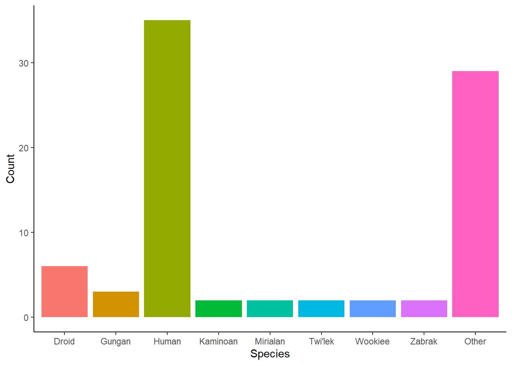
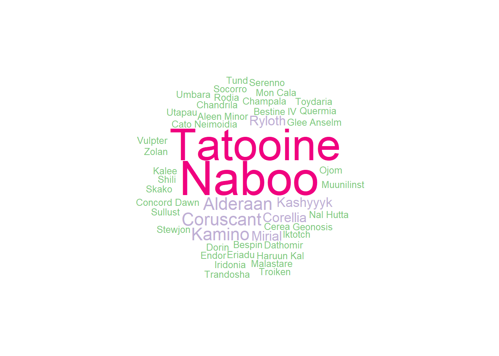
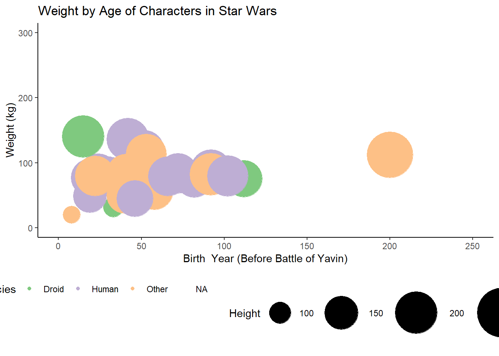
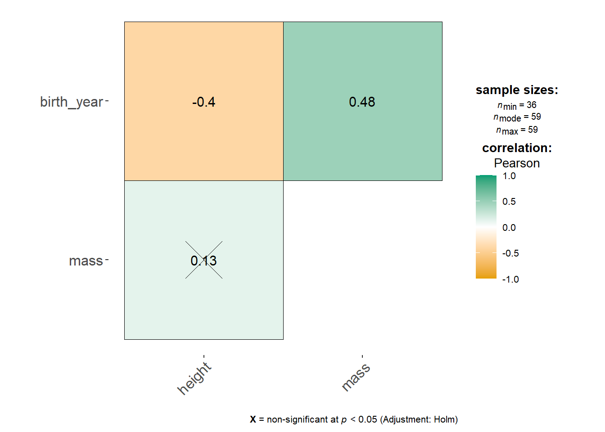

starwars |>
filter(species == "Human") |>
ggplot(aes(x = height, y = mass, colour = sex)) +
geom_point() +
theme_classic() +
scale_x_continuous(limits = c(0,250)) +
scale_y_continuous(limits = c(0,150)) +
scale_colour_brewer(palette = "Accent", name = "Sex") +
theme(legend.position = "bottom") +
labs(x = "Height (cm)",
y = "Weight (kg)",
title = "Height and Weight of Human Characters in Star Wars by Sex")3 Week 2: The Use and Abuse of Data
Lecture 2: Data Visualisation
This code will help you replicate the charts in Lecture 2
Height vs Weight by Sex
Histogram of male height
starwars |>
filter(species == "Human",
sex == "male") |>
ggplot(aes(x = height)) +
geom_histogram(binwidth = 3, fill = "#bb9cd1") +
theme_classic() +
labs(x = "Height (cm)",
y = "Count",
title = "Histogram of height of male human Star Wars characters")Density plot of male height
starwars |>
filter(species == "Human",
sex == "male") |>
ggplot(aes(x = height)) +
geom_density(fill = "#bb9cd1") +
theme_classic() +
labs(x = "Height (cm)",
y = "Count",
title = "Density plot of height of male human Star Wars characters")Boxplot of height
starwars |>
filter(species == "Human") |>
ggplot(aes(y = height, x = sex, colour = sex)) +
geom_boxplot() +
theme_classic() +
scale_colour_brewer(palette = "Accent", name = "Sex") +
labs(y = "Height (cm)",
x = "Sex",
title = "Boxplot of height by sex of human characters in Star Wars") +
theme(legend.position ="none")Mean height (bar chart)
starwars |>
filter(species == "Human") |>
group_by(sex) |>
summarise(ht = mean(height, na.rm = TRUE),
sd = sd(height, na.rm = TRUE)) |>
ggplot(aes(x = sex, y = ht, fill = sex)) +
geom_bar(stat = "identity") +
geom_errorbar(aes(ymin = ht-sd, ymax = ht+sd), width = 0.2)+
scale_fill_brewer(palette = "Accent") +
labs(y = "Mean Height (cm)",
x = "Sex",
title = "Mean height by sex of human characters in Star Wars") +
theme_classic() +
theme(legend.position = "none")Mosaic Plot
library(vcd)
startbl <- starwars |>
mutate(Species = fct_lump_n(species, 2),
EyeColour = fct_lump_n(eye_color,2))
mosaic(~ Species + EyeColour, data = startbl,shade = TRUE, legend = TRUE)Pie Charts are Just Bad Bar Charts
starwars |>
mutate(species = fct_lump_n(species, 4)) |>
group_by(species) |>
filter(!is.na(species)) |>
tally() |>
ggplot(aes(x = "", fill = species, y = n)) +
geom_bar(stat = "identity", width = 1) +
theme_void() +
coord_polar("y", start = 0)starwars |>
mutate(species = fct_lump_n(species, 4)) |>
group_by(species) |>
filter(!is.na(species)) |>
tally() |>
ggplot(aes(x = species, fill = species, y = n)) +
geom_bar(stat = "identity") +
theme_classic() +
labs(x = "Species", y = "Count") +
theme(legend.position = "none")
Wordclouds
library(wordcloud)
starwars |>
count(homeworld) |>
with(wordcloud(words = homeworld, freq = n, min.freq=1, random.order = FALSE, rot.per = 0,
colors = brewer.pal(6, "Accent"), use.r.layout = FALSE))
Raincloud Plots
starwars |>
mutate(species = fct_lump_n(species,2)) |>
filter(!is.na(species)) |>
ggplot(aes(x = species)) +
geom_point(aes(y = height, colour = species), position = position_jitter(width = .13), size = 1, alpha = 0.6) +
see::geom_violinhalf(aes(y = height, alpha= 0.3, fill = species), linetype = "dashed", position = position_nudge(x = .2)) +
geom_boxplot(aes(y = height, alpha = 0.3, colour = species), position = position_nudge(x = -.1), width = 0.1, outlier.shape = NA) +
theme_classic() +
labs(x = "Species", y = "Height (cm)") +
theme(legend.position = "none") +
coord_flip()Bubble plots
starwars |>
mutate(col = fct_lump_n(species, 2)) |>
ggplot(aes(x = birth_year, y = mass, size = height, colour = col)) +
geom_point() +
scale_size(range = c(.1, 24), name="Height") +
theme_classic() +
scale_x_continuous(limits = c(0,250)) +
scale_y_continuous(limits = c(0,300)) +
scale_colour_brewer(palette = "Accent", name = "Species") +
theme(legend.position = "bottom") +
labs(x = "Birth Year (Before Battle of Yavin)",
y = "Weight (kg)",
title = "Weight by Age of Characters in Star Wars") 
Correlation plots
starwars |>
select(height, mass, birth_year) |>
ggcorrmat()
Lecture 3: The Mean as a Basic Model
Data and custom function for this lecture
library(tidyverse)
heifers <- tibble(heifers = c(211.3, 200.4, 220.1, 200.8, 222.0, 209.3,
195.8, 220.4, 226.2, 218.7, 193.7, 209.7))
wage <- readxl::read_excel("assets/UKWageData2023ONS.xlsx",
skip = 5)
find_mode <- function(x) {
ux <- unique(x)
tab <- tabulate(match(x, ux))
ux[tab == max(tab)]
}Finding central tendency
heifers |>
summarise(mean = mean(heifers),
median = median(heifers),
min = min(heifers),
max = max(heifers),
mode = find_mode(round(heifers, 0)))# A tibble: 1 × 5
mean median min max mode
<dbl> <dbl> <dbl> <dbl> <dbl>
1 211. 210. 194. 226. 220wage |>
summarise(mean = mean(Median),
median = median(Median),
min = min(Median),
max = max(Median),
mode = find_mode(round(Median,0)))# A tibble: 4 × 5
mean median min max mode
<dbl> <dbl> <dbl> <dbl> <dbl>
1 34475. 31988 17859 84131 28216
2 34475. 31988 17859 84131 35248
3 34475. 31988 17859 84131 26000
4 34475. 31988 17859 84131 25000The Mean and Outliers
heifers |>
ggplot(aes(x = heifers)) +
geom_density(fill = "#bb9cd1") +
theme_classic() +
labs(x = "Heifer Weight (kg)",
y = "Density")heifers |>
ggplot(aes(x = heifers)) +
geom_density(fill = "#bb9cd1") +
geom_vline(aes(xintercept = 210.7)) +
theme_classic() +
labs(x = "Heifer Weight (kg)",
y = "Density")Mean UK Salary
wage |>
ggplot(aes(x = Median)) +
geom_density(fill = "#bb9cd1") +
theme_classic() +
geom_vline(aes(xintercept = 34475)) +
labs(x = "UK Salaries (£)",
y = "Density",
title = "Distribution of UK Salaries",
caption = "Data taken from ONS 2023 Median Salaries by Field, n = 329 fields")The Mode
heifers |>
ggplot(aes(x = heifers)) +
geom_histogram(fill = "#bb9cd1", binwidth = 1) +
geom_vline(aes(xintercept = 220)) +
theme_classic() +
labs(x = "Heifer Weight (kg)",
y = "Density")Multiple Modes
wage |>
ggplot(aes(x = Median)) +
geom_histogram(fill = "#bb9cd1", bins = 200) +
geom_vline(aes(xintercept = 25000)) +
geom_vline(aes(xintercept = 26000)) +
geom_vline(aes(xintercept = 28216)) +
geom_vline(aes(xintercept = 35248)) +
theme_classic() +
labs(x = "UK Salaries (£)",
y = "Count")The Median
heifers |>
ggplot(aes(x = heifers)) +
geom_density(fill = "#bb9cd1") +
geom_vline(aes(xintercept = 210)) +
theme_classic() +
labs(x = "Heifer Weight (kg)",
y = "Density")Median UK Salary
wage |>
ggplot(aes(x = Median)) +
geom_density(fill = "#bb9cd1") +
theme_classic() +
geom_vline(aes(xintercept = 34475), colour = "lightblue") +
geom_vline(aes(xintercept = 31988),colour = "purple") +
labs(x = "UK Salaries (£)",
y = "Density",
title = "Distribution of UK Salaries",
caption = "Data taken from ONS 2023 Median Salaries by Field, n = 329 fields")